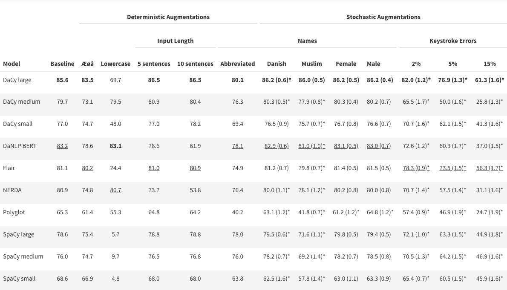
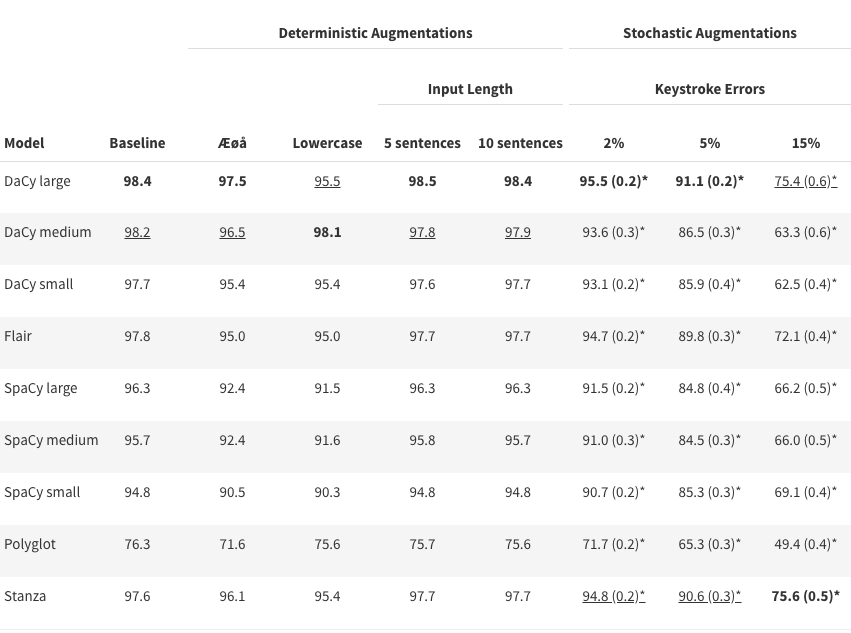
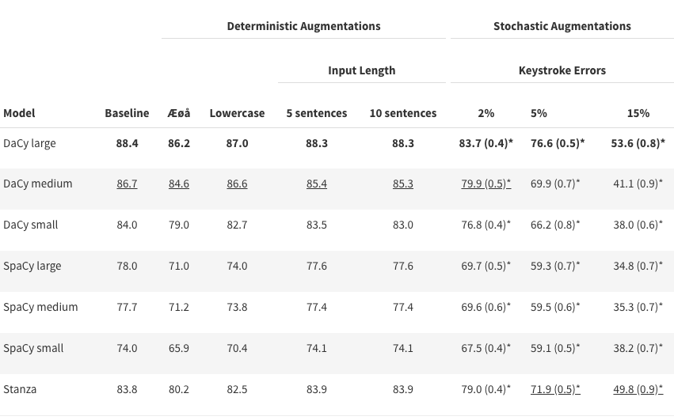

Robustness and Biases¶
In the paper DaCy: A Unified Framework for Danish NLP we conduct a series on augmentation on the DaNE test set to estimate the robustness and biases of DaCy and other Danish language processing pipelines. This page represent only parts of the paper. We recommend reading reading the paper for a more thorough and nuanced overview. Let’s start by examining a couple of the augmentations, namely changing out names or introducing plausible keystroke errors.
Example
Original
Peter Schmeichel mener også, at det danske landshold anno 2021 tilhører verdenstoppen og kan vinde den kommende kamp mod England.
Female name augmentation
Anne Østergaard mener også, at det danske landshold anno 2021 tilhører verdenstoppen og kan vinde den kommende kamp mod England.
5% keystroke errors
Peter Schmeichel mener ogsål at det dansie landahold anno 2921 tilhører vefdrnstoppen og kan vonde den kimmende kamp mod England.
The underlying assumption of making these augmentations is that the tags of the tokens do not change with augmentation. In our case this includes that “Anna Østergaard” is still a person and that “vonde” can still be considered a verb based on its context.
Based on this, we can assume that if a models performs worse on a certain set of names or with minor spelling variations or errors, we can conclude that we model is vulnerable to such input. For instance, if the model has a hard time when replacing æ, ø, and å with ae, oe, and aa it might not be ideal to apply to historic texts.
As seen in the example above, while text with 5% keystroke is still readable. However, 15% keystroke errors tests the limit of what humans and models can reasonably be expected to comprehend.
15% keytype errors
Peter Schmeichel mejer ogsp, at ddt danske landshoof anbo 202q tilhårer gerfenatop0en of lan vinde sen kpmkendw lamp mod England.
The following tables show a detailed breakdown of performance for named entity recognition, part-of-speech tagging and dependency parsing. These show some general trends, some of which include:
Spelling variations and abbreviated first names consistently reduce performance of all models on all tasks.
Even simple replacements of æ, ø, and å with ae, oe, and aa lead to notable performance degradation.
In general, larger models handle augmentations better than small models with DaCy large performing the best
The BiLSTM-based models (Stanza and Flair) perform competitively under augmentations and are only consistently outperformed by DaCy large.
Named entity recognition¶
In the following table we see a the performance on named entity recognition (NER) of Danish NLP pipelines reported as average F1 scores excluding the MISC category. We have highlighted the best scores in bold and second best are underlined. The “*” denotes that the result is significantly different from baseline using a significance threshold of 0.05 with Bonferroni correction for multiple comparisons. Values in parentheses denote the standard deviation.
{kind=link}
Hint
NERDA limits input size to 128 wordpieces which leads to truncation on long input sizes and when there is a high rates of keystroke errors.
Besides the general trends mentioned above we can also note that:
All models show a bias toward Muslim names, except DaCy large. The robustness of DaCy large likely stems from the multilingual pre-training.
No models show significant biases based on gender with the exception of Polyglot.
DaCy small is robust to spelling errors and outperforms larger models such as DaNLP’s BERT and NERDA.
DaNLP’s BERT and NERDA models were found to under-perform if given longer input lengths.
DaCy’s models consistently perform slightly better with more context, but are not vulnerable to shorter input.
Lack of casing is detrimental for NER for the cased models, most notably Flair, the SpaCy models, DaCy large and DaCy small.
Part-of-speech tagging¶
In the following table we see the accuracy of Danish NLP pipeline on part-of-speech tagging.
{kind=link}
Part-of-speech-tagging has long had a performance around 97-98% and it is argued by Manning (2011) that obtaining greater accuracy requires updates to the training data rather than new architectures.
Dependency parsing¶
In the following table we see the LAS score of Danish models for dependency parsing.
{kind=link}